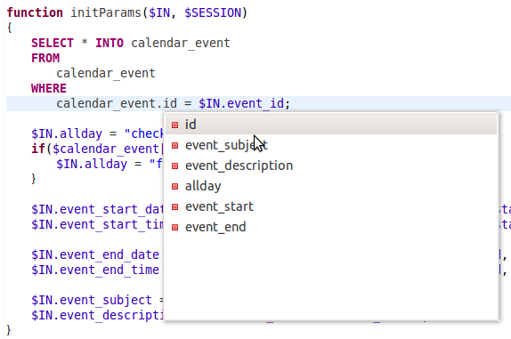
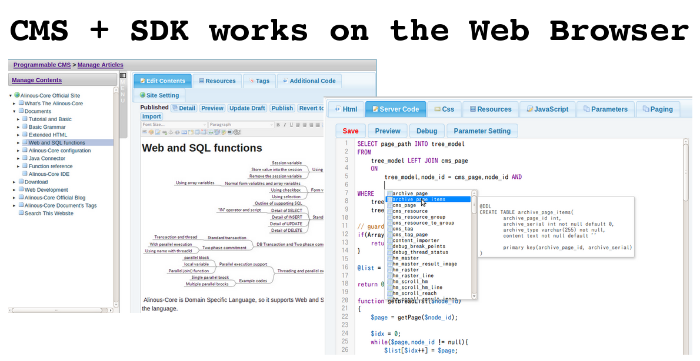

Application Server for Agile Web Database Application Development Tools. The Framework Programming Language using Java. Works on Tomcat and supports PostgreSQL. Eclipse Plugin IDE to develop and debug is available.
Agile Web Database Application Development Paas Platform. The Framework Programming Language using Java. Works on Tomcat and supports PostgreSQL. Eclipse Plugin IDE to develop and debug is available.

Alinous-Core is an application server to run Domain Specific Language(DSL) as agile developemnt framework. It can execute SQL directly in the programming language.
Web Database development framework is complex and it is difficult to learn it. By suppoting the framework functions by DSL, It is very easy to learn it.
Devops needs simple programming code. Simple code without complex framework is easy to maintain. When you change the specification of the application or website, you can do it very easily.
Simple program code is good for programmers to maintain it. This programming language provides Eclipse IDE so that following functions are available.

This framework has an example web database application, which is Content Management System for Documentation Sites.
The source code of the CMS is hosted on Github, docker-alinous-cms.
The Application Server is written in Java, therefore it can be exteded by putting jar files (Java archive file) on the proper dorectory. The application server will automatically detect them and automatically deploy it internally.
You can download built Server Side Program and Eclipse SDK from following pages.
The Example CMS is included in the Eclipse Plugin SDK as a CMS Project.
This software's License is MIT License.
Now we are developong C++ version of this language. It contains original high performance database. It will comming soon.